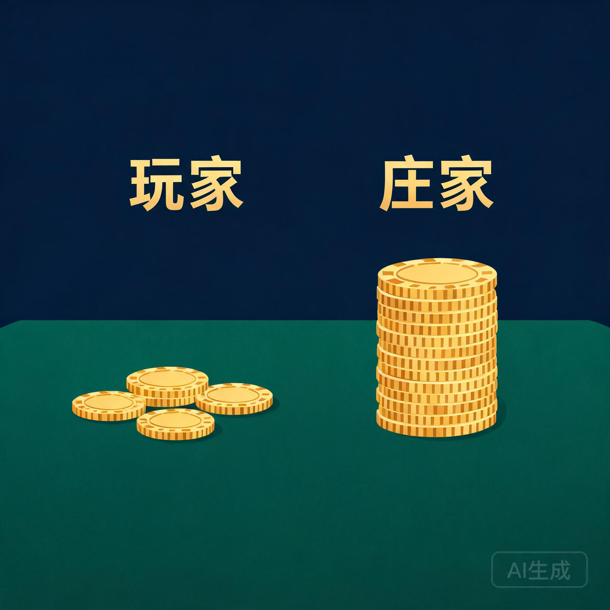
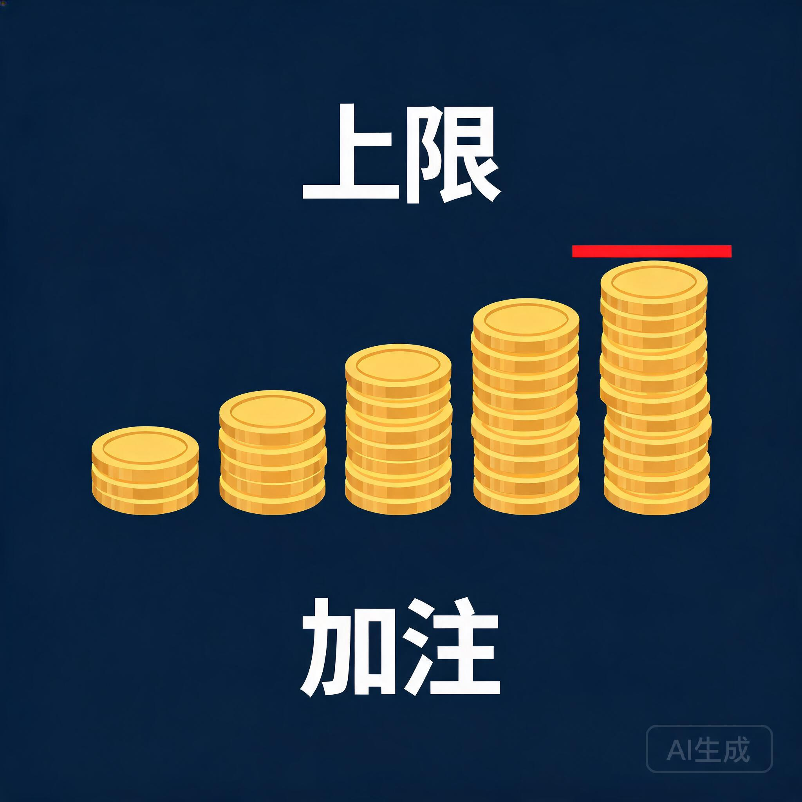
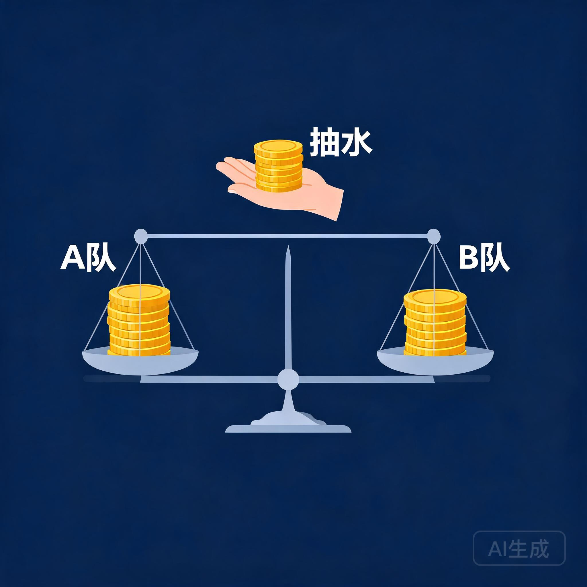

概率对你和赌场完全一样。不一样的是你们各自站在这条曲线的哪一端。
当一次庄家 →选一个游戏当庄家。下面所有模块都会沿用这张卡里的庄家优势。
点击任一卡片选中它。点欧式轮盘（1/37）看 2.7% 在概率上意味着什么。
拖动滑块。数学公式：玩家盈利概率 = Φ(−e·√n)，e 是庄家优势，n 是手数。
左边是手数 n（对数刻度），右边是庄家优势。当前 edge = 2.70%（沿用模块一的选择）。
同一个庄家优势：左边 n=100，右边 n=1,000,000。点「跑一次」看分布。
玩家 vs 庄家的本金不对称。先调滑块，再分步跑 1 个、100 个、10000 个赌徒。
马丁格尔：每输一把就把下一手翻倍。你会先觉得这是必胜法，然后被桌限一棍打死。

先点第 1 步（同策略同本金，只是不设桌限）。再点第 2 步（加一条桌限 = 1000）。两条都跑完再下结论。
体育博彩的真本事不在猜比赛——是把账本做平衡，让两边押注抽到的水都进自己口袋。

输入两侧押注额，下面实时算两种结果下庄家的净收益。抽水率 = 1/A赔率 + 1/B赔率 − 1。
翻完这些案例你会看到：几乎没有一家赌场是被运气搞垮的。
保险公司赚保费差、做市商赚买卖价差、交易所和平台赚手续费与抽成、彩票发行方……同一套结构，都不赌方向，只从别人的方差里提取确定性收益。
"庄家从来不指望赢下这一把，它赌的是下一把还有。"
把整套数学做成了可以自己拖的演示。
最有意思的是模块四：先无桌限跑一遍倍投，你会觉得自己发现了必胜法；然后把桌限打开，同样的策略、同样的本金，只多一条规则。